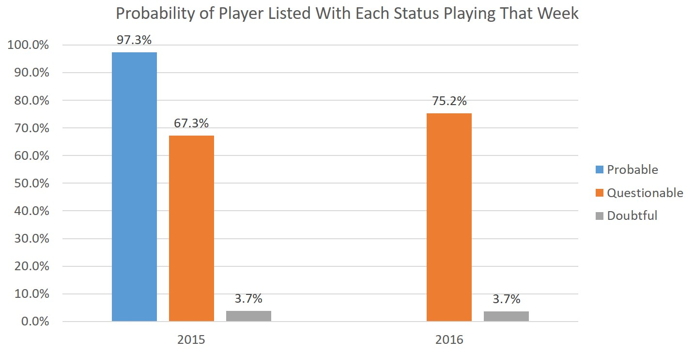
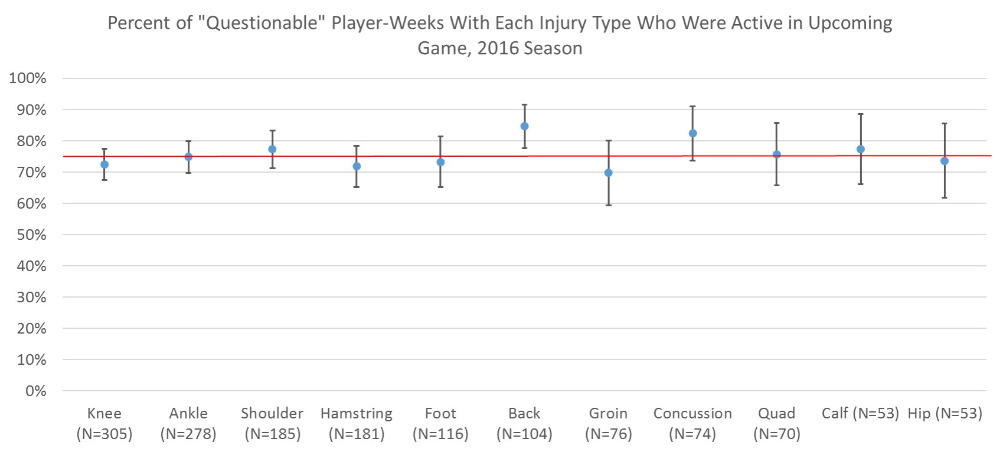
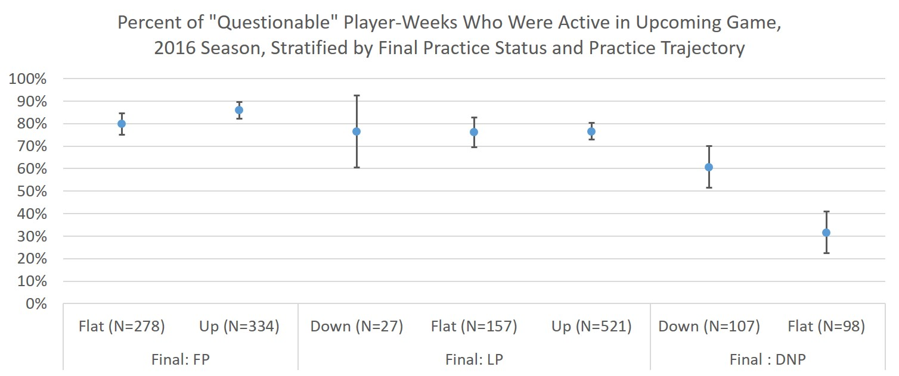
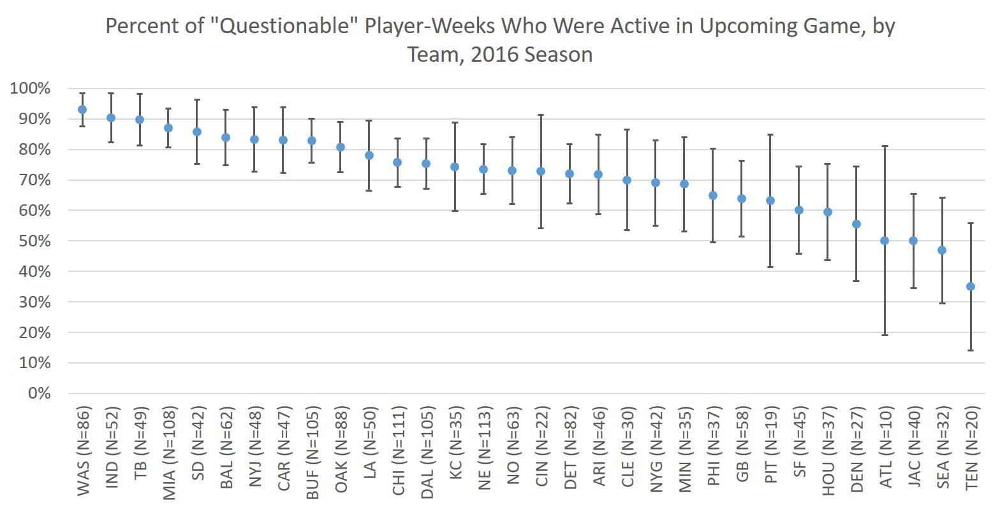

The ‘Post-Probable’ Injury Report Era: Full-Season Update
Hey, long time. Been awhile. How are the kids? Childish? That’s good.
I’ve been a bit distracted with side projects lately – buying a house, co-teaching a high-level statistics course, my dissertation…you know, little things – so sorry for not updating this blog that no one reads for a few months.
BUT! I’m back with a very exciting post: I’m updating my prior investigation into the effects of the NFL’s decision to remove “Probable” from its injury report this past season, now that we have a full season to see how teams adapted (the original analysis had only weeks 1-8). Let me tell you, it’s been miserable for NFL injury analysts and honestly…probably pretty much fine for everyone else.
Since my previous two posts lay out all the relevant background, methods, and data sources in detail, we’re gonna skip right to the results update!
So What Happened When the NFL Dumped “Probable?”

The above chart is a stacked bar chart of the number of player-weeks on the injury report with each game status from 2013-2016. I’ve also added (exact Poisson) 95% confidence limits to each category to help give us an idea of whether year-to-year changes in counts are beyond what we might expect from random chance – by and large, they’re not.
Obviously the probable bar went to zero in 2016 as the designation was eliminated. In previous years, the total number of probable and questionable player-weeks was 3,767 (2013), 3,571 (2014), and 3,484 (2015). On average, these years saw 2,524 probable and 1,084 questionable player-weeks. In 2015 there were 2,424 probable and 1,060 questionable player-weeks.
In 2016, meanwhile, we saw just 1,746 questionable player-weeks. If we assume we would’ve seen the same data in 2016 as 2015 if “Probable” hadn’t been removed (likely not a perfectly reasonable assumption because of random variation from year to year), it looks like about 35-40% of “Probable” player-weeks went into the “Questionable” category and the remainder fell off the report. This is just a touch higher than our mid-season estimate of 30-35%.
I was also curious whether there would also be a tendency to push everyone down the game status list (e.g. 2015 questionable becomes 2016 doubtful). Doubtful designations are basically unchanged while Out designations are up somewhat (747, 877, 920, and 1,009 player-weeks from 2013-2016), but overall I’m not seeing a ton of evidence for this kind of trend.
How Often do Questionable Players Play Now?
The official League definition of “Questionable” now is “uncertain that the player will play.” Well, that’s…vague. Previously the League said 75% of Probable, 50% of Questionable, and 25% of Doubtful players should play, but these percentages – which weren’t all that accurate, anyway, to be fair – are now gone. So what does Questionable mean in 2016?

Turns out a “Questionable” designation used to mean that, on average, you had about about a 65-70% chance of playing that week, though this varies a lot by team1. In 2016 players had about a 75% chance of playing each week; that’s a substantial difference.
Given the relative numbers of Probable and Questionable designations in the past few seasons, this is just a tick lower than what we’d expect to see if 35-40% of Probables were now Questionable – but that makes sense since many of the Probables who became Questionables were probably “more hurt” Probables (i.e. their risk of missing a game was likely above the overall Probable average).
These numbers are also largely in line with our mid-season analysis, though the proportion of Questionables playing in 2015 is somewhat higher.
Regardless, the Questionable designation was already a tough-to-predict hodgepodge before this year, and it’s only gotten more heterogeneous.
Projecting Questionable Players in the Post-Probable Era
Since the Questionable players are now a mix of players who were previously both “Questionable” and “Probable” a natural question is: can we predict which “Questionable” players in 2016 are going to play (we’ll ignore the question of whether they’ll play well, for now)? Let’s check a few different predictors: injury type, practice status, and the player’s team.
Injury Type:

Most injuries seem to be clustered right around the overall average of 75%, marked with a red line in the above chart (the mid-season average was 73%). Players with back injuries (85% active) and concussions (82% active) were the most likely to play. Concussions (which were also above-average in the mid-season analysis) in particular makes sense to me since the return-to-play process portion of the NFL’s concussion protocol, while it has no set timeline, is often hard to complete in 5 days but easier to complete in 7, leaving a lot of players as “Questionable” on the game status report but ready to suit up on game day.
Back injuries were basically average in our mid-season analysis, but they’re substantially higher now; quadriceps/thigh injuries followed a reverse pattern. I’m not sure what to make of either of these, but if any trainers or physical therapists or physicians want to weigh in in the comments, please do!
On the other end, players with groin injuries (70% active) were somewhat below average both at mid-season and now. I’m not sure I have an explanation for that but, again, I would value any input trainers or medical folks can provide down in the comments!
I’ve also included error bars, which represent 95% confidence intervals. The intervals mostly overlap and all but back injuries include the overall average, so it’s possible there are no true differences among injuries and all we’re seeing is random noise. But if I had to guess, I think we’re seeing a real higher active proportion among concussions and maybe back injuries (though that’s tempered by the fact that they were average at mid-season). I’m not so sure about groin injuries being truly lower, either.
Practice Status:

Details on the trajectories are available here. In a nutshell: I stratified by the player’s final practice report status (Full/FP, Limited/LP, or none/DNP) before their game each week and the trajectory (down/flat/up) their statuses followed throughout the week.
Overall, if your final practice status was FP/LP/DNP, you played 83/76/47% of the time (the DNP figure is a bit higher than it was at mid-season). We often hear fantasy experts saying they’re concerned if a player doesn’t practice late in the week; this data bears that out, but it’s also not a death sentence.
As far as the trajectories go there’s less, but still some, variation. Overall, Down/Flat/Up trajectories meant you played 72/70/82% of the time. So if you’re trending up (as I’ve defined it) you’re more likely to play, whereas flat and down trajectories are similar at a bit below the overall average.
When we stratify by both, we see that among player-weeks with full participation in their last practice, those who were trending up (86% active) were somewhat more likely to play than those who stayed flat (80%), though this difference is much smaller than it was at mid-season.
Among players with limited participation at their last practice report, there was virtually no variation by trajectory; all groups were 76-77% likely to play.
Among players who did not participate in their final practice, those who had declined from mid-week actually had a decent chance to still play: 61%. That’s kind of surprising to me – it may be semi-injured guys just being given Friday off? Meanwhile, if a guy doesn’t practice all week his chances of playing are pretty low at 32%. Honestly, that’s still higher than I was expecting!
Except as noted above, these figures are largely in line with our mid-season analysis.
Team:
Teams have historically exhibited quite a bit of variation in what proportion of their “Questionable” players suit up on Sunday. Did this continue in 2016?

Overall you see quite a bit of variation by team – from Cincinnati with 93% of questionable players suiting up to Tennessee with just 35%. This is about the same range we saw in the mid-season analysis, as well.
You see a pretty even distribution of proportions across teams – they follow a gradation rather than being in “high” or “low” clusters. This suggests to me teams have settled on a natural range of definitions for what constitutes a “Questionable” player – this is to be expected when the official League definition of “Questionable” is the vague “uncertain that the player will play.”
Notably, this is about the same pattern of Questionable usage we saw before Probable was eliminated, so this isn’t really a new phenomenon of confusion. Indeed, some teams at least seem to have stumbled onto a definition they like and stuck with it, particularly at the low end: the bottom 3 teams in questionable active percentage in 2016 (Titans, Seahawks, and Jaguars) were 1st, 3rd, and 9th lowest in 2015, as well (they were 5th, 9th, and 11th lowest in 2014). These teams could be thought of as resistant to reporting minor injuries as “Questionable,” upping the chance that someone who is listed as such won’t play.
The Steelers are an example of a team that seems especially tight with listing Questionable players: in 2016 they had the 8th lowest in percentage and listed the second fewest players as Questionable. In 2015 and 2014 they listed the 3rd fewest and fewest, respectively; their active percentage was lowest in both those years, too. So if you’ve got a Questionable Steeler in your fantasy lineup, check their status carefully.
As a sidenote, New England – where Bill Belichick has a reputation for…strategic use of the injury report – did list a league-high 113 player-weeks as Questionable in 2016. However, they have played at a near-average clip, suiting up 73% of the time. I’m a Dolphins fan, and even I have to admit that doesn’t support the shady Belichick narrative.
{kind=link}
Conclusions
Our numbers were largely in line with what we saw through the first 8 weeks of the season, though our larger sample size reduces some of the uncertainty we had at mid-season.
Overall, a little over a third of players previously marked as Probable appear to now be Questionable, with the remainder falling off the injury report. Questionable players are more likely to play now than they were in the past: the proportion has risen from the low-to-mid-60s to around 75% (which was, interestingly, always the stated proportion of Probables who should have played).
As far as which Questionables will suit up, the type of injury doesn’t help a whole lot. Certain patterns of practicing and not practicing during the week can certainly identify high- and low-risk players. Finally, teams exhibit a lot of variation in the severity of injuries that lead them to mark a player as Questionable, a fact that could be leveraged to make better predictions about which players will hit the field on game day (with the major limitation that we’re not predicting anything about how well they’ll perform if/when they get off the sideline).
Footnotes
Full disclosure: this 67.3% figure might be somewhat overestimated (5-10% or so) due to some problems I had linking to the historical active status data.↩︎